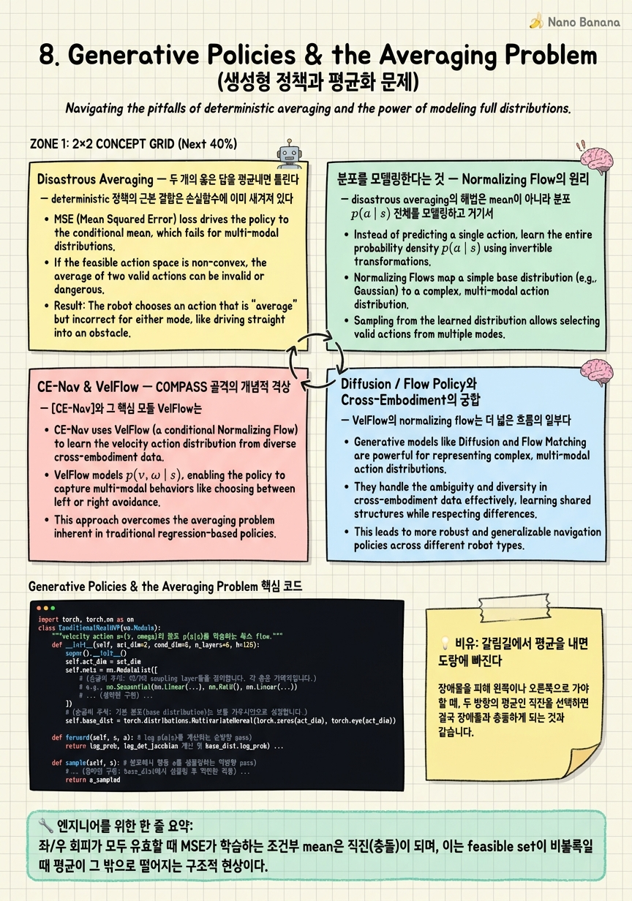

Generative Policies & the Averaging Problem

🎯 학습 목표
- multi-modal 결정에서 deterministic 회귀가 실패하는 이유를 예시로 설명한다
- normalizing flow가 action의 full distribution을 학습하는 원리를 안다
- CE-Nav의 IL-then-RL + VelFlow 구조를 COMPASS와 비교할 수 있다
- diffusion/flow policy가 cross-embodiment에서 갖는 이점을 설명한다
- COMPASS의 KL distillation이 사후적으로 옳은 방향이었던 이유를 안다
Chapter 5에서 COMPASS는 distillation의 averaging effect를 스스로 한계로 인정했고, Chapter 7에서 우리는 cross-embodiment generalist가 필연적으로 여러 몸·여러 상황의 행동을 하나로 합친다는 것을 봤다. 이 챕터는 그 averaging이 왜 단순한 성능 저하가 아니라 재앙적(disastrous) 실패가 될 수 있는지, 그리고 그것을 근본적으로 해결하는 길이 왜 '분포를 모델링하는 생성형 정책'인지를 규명한다.
문제의 정수는 하나의 그림으로 압축된다. 정면에 기둥이 있고, 좌로 피하는 것도 우로 피하는 것도 똑같이 유효한 최적해라고 하자. 이 상황의 '평균 행동'은 직진 — 즉 기둥과의 정면충돌이다. 두 개의 옳은 답을 평균내면 틀린 답이 나오는 것이다. deterministic 정책(mean regression)은 이런 multi-modal 결정에서 구조적으로 실패한다. 그리고 cross-embodiment generalist는 이 multi-modality를 두 층에서 겪는다 — 같은 상황에서 여러 valid path가 있고(상황 multi-modality), 몸마다 최적 행동이 다르다(embodiment multi-modality).
해법은 명확하다. 하나의 mean을 회귀하는 대신 action의 전체 분포 \(p(a \mid s)\)를 모델링하고 거기서 sampling하는 것. CE-Nav(Amap/Alibaba, 2025.09)의 VelFlow(conditional normalizing flow)와 manipulation에서 건너온 diffusion policy가 이 길의 두 대표다. 흥미롭게도 COMPASS가 MSE 대신 KL distillation(variance 보존)을 택해 더 나은 결과를 얻은 것이, 사후적으로 이 '분포를 살려야 한다'는 방향의 정당성을 이미 예고하고 있었다. 이 챕터는 그 실마리를 완결된 생성형 정책 이론으로 확장한다.
핵심 내용
Disastrous Averaging — 두 개의 옳은 답을 평균내면 틀린다
deterministic 정책의 근본 결함은 손실함수에 이미 새겨져 있다. MSE(mean squared error)로 학습하는 정책은 조건부 기댓값 \(\mathbb{E}[a \mid s]\)을 근사한다 — 주어진 상태에서 데이터에 나타난 행동들의 평균을 낸다. 데이터가 unimodal(정답이 하나)이면 이 평균이 곧 정답이라 문제가 없다. 재앙은 데이터가 multi-modal일 때 터진다.
정면에 기둥이 있는 상황을 보자. 전문가 시연(혹은 여러 valid trajectory)에는 '좌회전'과 '우회전'이 모두 담긴다 — 둘 다 완벽히 유효한 회피다. MSE는 이 두 mode의 평균을 학습하는데, 좌회전(각속도 \(+\omega\))과 우회전(\(-\omega\))의 평균은 \(0\), 즉 직진이다. 정확히 피해야 할 기둥으로 돌진하는 행동이 학습된다. 두 개의 옳은 답 사이 '중간'이 옳은 답이 아닌 것 — 이것이 disastrous averaging이며, action space가 비볼록(non-convex feasible region)일 때 평균이 feasible set 밖으로 떨어지는 현상이다.
\[a^* = \arg\min_a \mathbb{E}_{a' \sim p(a'|s)}\|a - a'\|^2 = \mathbb{E}[a'|s]\]
이 식이 말하는 바는 명확하다 — MSE 최소해는 언제나 mode들의 평균이지 mode 자체가 아니다. left mode와 right mode가 대칭이면 그 평균은 정확히 그 사이 골짜기(충돌 경로)에 앉는다.
cross-embodiment는 이 함정을 두 배로 판다. 첫째 상황 multi-modality — 방금의 좌/우 회피처럼 한 상태에 여러 valid action이 존재한다. 둘째 embodiment multi-modality — 같은 상황이라도 폭이 좁은 G1은 선반 밑을 통과하고 큰 H1은 우회하는 등, 몸마다 최적 행동의 mode가 다르다(Chapter 6). generalist가 여러 몸의 행동을 하나로 distill하면 이 서로 다른 mode들이 뭉개져 어느 몸에도 맞지 않는 평균으로 붕괴할 위험이 있다. COMPASS가 Discussion에서 인정한 averaging effect가 바로 이것이다 — distillation이 embodiment 간 평균화를 유발해 embodiment-dependent 성능 편차를 만든다.
따라서 문제의 진단은 분명하다. cross-embodiment generalist는 본질적으로 multi-modal이므로, mean 하나를 내는 deterministic 정책으로는 원리적으로 담을 수 없다. 해결은 정책을 '하나의 행동을 내는 함수'에서 '행동의 분포를 내는 생성기'로 격상하는 것뿐이다.
분포를 모델링한다는 것 — Normalizing Flow의 원리
disastrous averaging의 해법은 mean이 아니라 분포 \(p(a \mid s)\) 전체를 모델링하고 거기서 sample을 뽑는 것이다. 그러면 좌/우 회피는 두 개의 mode로 보존되고, 실행 시 그중 하나를 sampling하므로 '중간(직진)'은 절대 나오지 않는다. 이를 구현하는 강력한 도구가 normalizing flow다.
Normalizing flow(정규화 흐름) = 단순한 base 분포(예: 표준 가우시안 \(z \sim \mathcal{N}(0, I)\))를 invertible(가역) 변환 \(f_\theta\)의 연쇄로 복잡한 목표 분포로 밀어 보내는 생성 모델. 핵심은 변수변환 공식으로 정확한 likelihood를 계산할 수 있다는 점이다.
\[\log p(a) = \log p(z) - \log \left| \det \frac{\partial f_\theta(z)}{\partial z} \right|, \quad a = f_\theta(z)\]
이 식의 두 항이 flow의 전부다. \(\log p(z)\)는 base 가우시안의 log-density(쉬움), 두 번째 Jacobian determinant 항은 변환이 공간을 얼마나 늘리고 줄였는지를 보정한다. \(f_\theta\)가 invertible하므로 exact likelihood를 계산할 수 있고(diffusion의 variational bound와 달리 정확), \(z\)를 뽑아 \(f_\theta\)에 통과시키면 exact sampling도 된다. conditional로 확장하면 상태 \(s\)를 조건으로 넣어 \(f_\theta(z; s)\)를 만들어 \(p(a \mid s)\)를 표현한다.
flow가 multi-modality를 담는 원리는 직관적이다. 가우시안 \(z\) 공간은 unimodal이지만, \(f_\theta\)가 이 공간을 접고 늘려(fold and stretch) action 공간의 여러 봉우리로 매핑한다 — 마치 종이 한 장(단봉)을 접어 두 개의 산봉우리를 만드는 것과 같다. 좌회전에 해당하는 \(z\) 영역과 우회전에 해당하는 \(z\) 영역이 각각 별개의 mode로 사영되어, 두 유효 행동이 뚜렷이 분리된 채 보존된다.
flow를 학습하는 방법은 maximum likelihood다 — 데이터에 나타난 action들의 \(\log p(a \mid s)\)를 최대화한다. 여기서 MSE와의 결정적 차이가 드러난다. MSE는 데이터를 하나의 평균으로 요약하려 하지만, likelihood 최대화는 데이터의 모든 mode에 확률질량을 배분하려 한다 — 좌회전 데이터도 우회전 데이터도 각각 높은 likelihood를 갖도록 두 봉우리를 세운다. 그래서 flow는 평균이 아니라 분포를 배우고, 이것이 averaging을 근본에서 회피하는 이유다. 대안으로 diffusion policy도 같은 목표(분포 모델링)를 노이즈 제거의 iterative denoising으로 달성하지만, flow는 invertibility 덕에 exact likelihood와 one-pass sampling이 가능해 실시간 제어에 유리하다.
CE-Nav & VelFlow — COMPASS 골격의 개념적 격상
CE-Nav(Amap/Alibaba, 2025.09)는 이 분포 모델링을 cross-embodiment navigation의 완성된 시스템으로 구현한다. 구조를 보면 COMPASS와 판박이 골격이지만, 각 부품을 개념적으로 한 단계 격상한다.
CE-Nav의 뼈대는 two-stage IL-then-RL로, 두 가지 능력을 명시적으로 분리한다. 첫째 stage는 universal geometric reasoning(범용 기하 추론) — 모든 몸이 공유하는 '공간을 어떻게 통과할 것인가'라는 embodiment-무관 지식. 둘째 stage는 embodiment-specific dynamic adaptation(몸별 동역학 적응) — 각 몸의 dynamics에 맞춘 미세 조정. 이 분리는 COMPASS의 IL(공유 mobility prior) → residual RL(embodiment 적응) 구도와 정확히 대응한다. 차이는 COMPASS가 이를 '엔지니어링 단계'로 다뤘다면 CE-Nav는 '개념적 원리'로 격상해, 무엇이 공유되고 무엇이 몸별인지를 이론적으로 명시했다는 점이다.
결정적 차별점은 action을 내는 방식이다. CE-Nav의 VelFlow = conditional normalizing flow로, classical planner가 대규모로 생성한 데이터에서 kinematically-sound action의 full distribution을 학습한다. classical planner는 어느 상황에서 좌·우 여러 유효 경로를 모두 만들어내는데, VelFlow는 이 다양성을 평균내지 않고 분포로 그대로 흡수한다 — 정확히 averaging을 회피하는 것이다. 실행 시 이 분포에서 velocity action을 sampling하므로, 좌/우 회피 상황에서 직진 붕괴가 일어나지 않는다. 적용 embodiment는 quadruped·biped·quadrotor로, 지상·이족·공중을 아우른다.
| 측면 | COMPASS | CE-Nav |
|---|---|---|
| 공유 vs 몸별 분리 | IL → residual RL (엔지니어링 단계) | universal geometric reasoning vs embodiment-specific adaptation (개념 원리) |
| action head | MLP mean + global variance (deterministic) | VelFlow: conditional normalizing flow (분포) |
| 데이터 소스 | X-Mobility(world-model IL) teacher | classical planner 대규모 데이터 |
| averaging 처리 | Discussion에서 한계로 인정 | flow로 분포 학습해 회피 |
| embodiment | Carter·H1·Spot·G1 | quadruped·biped·quadrotor |
요컨대 CE-Nav는 COMPASS의 '무엇을 나눌 것인가(공유/몸별)'라는 골격은 계승하되, '행동을 어떻게 낼 것인가'라는 지점에서 deterministic mean을 generative distribution으로 대체했다. COMPASS가 남긴 averaging 한계에 대한 직접적 응답인 셈이다.
Diffusion / Flow Policy와 Cross-Embodiment의 궁합
VelFlow의 normalizing flow는 더 넓은 흐름의 일부다. manipulation에서 시작된 diffusion policy와 flow policy는 모두 'action의 분포를 모델링해 multi-modality를 보존한다'는 동일 계열에 속한다. 이 생성형 정책 패러다임이 왜 특히 cross-embodiment에서 강력한지를 짚어야 한다.
Diffusion policy는 action에 점진적으로 노이즈를 더하는 forward process를 역으로 뒤집는 iterative denoising으로 \(p(a \mid s)\)를 학습한다. manipulation에서 grasp의 여러 valid 방식(왼쪽/오른쪽에서 집기)을 하나로 뭉개지 않고 각 mode를 살려낸 것이 그 위력의 증거였다. Flow policy(VelFlow 계열)는 invertible transform으로 같은 분포 모델링을 달성하되, exact likelihood와 빠른 sampling(one-pass에 가까움)에서 이점이 있어 실시간 로봇 제어에 특히 적합하다.
| 축 | Deterministic (MLP mean) | Diffusion policy | Normalizing flow (VelFlow) |
|---|---|---|---|
| 출력 | 단일 action(평균) | 분포(iterative sampling) | 분포(invertible, 1-pass 근접) |
| likelihood | — | variational bound(근사) | exact |
| multi-modality | 붕괴(averaging) | 보존 | 보존 |
| 추론 속도 | 최속 | 느림(다단계 denoise) | 빠름 |
cross-embodiment에서 생성형 정책이 갖는 이점은 두 겹이다. 첫째, 앞서 본 이중 multi-modality(상황 + embodiment)를 정면으로 담는다 — 하나의 조건부 분포 \(p(a \mid s, e)\)가 상황이 만드는 여러 mode와 embodiment가 만드는 여러 mode를 함께 표현한다. deterministic head가 이 둘을 평균으로 뭉갤 때, 생성형 head는 embodiment embedding \(e\)에 조건화된 분포로 각 몸의 고유 mode를 선명히 유지한다.
둘째, generalist distillation과의 궁합이다. Chapter 5에서 KL distillation이 MSE보다 나았던 이유가 여기서 완결된다 — teacher specialist들이 서로 다른 분포를 가질 때, student가 분포를 표현할 수 있어야 그것들을 뭉개지 않고 담는다. deterministic student는 여러 teacher의 mean으로 수렴하지만, generative student는 각 teacher의 분포를 조건부로 재현한다. 즉 생성형 정책은 cross-embodiment distillation에서 averaging을 구조적으로 막는 유일한 방식이다.
대가도 정직하게 봐야 한다. diffusion은 다단계 denoising으로 추론이 느려 30Hz 실시간 제어엔 부담이고(그래서 최근 flow·consistency 계열이 속도로 응답), 분포 모델링은 학습·튜닝이 deterministic보다 까다롭다. 그럼에도 cross-embodiment의 본질이 multi-modal인 이상, 이 비용은 '성능 대 정확성'의 선택이 아니라 '작동 대 붕괴'의 선택이다 — averaging이 disastrous인 상황에서 분포 모델링은 사치가 아니라 필수다.
KL Distillation의 사후적 정당성 — COMPASS가 이미 옳았던 방향
이 챕터의 마지막 통찰은 과거를 되돌아보는 데 있다. Chapter 5에서 COMPASS가 distillation loss로 MSE가 아니라 KL divergence를 택하고, teacher의 variance를 student가 보존하도록 한 것이 더 나은 결과를 냈다. 당시엔 '분포를 맞추는 게 평균만 맞추는 것보다 낫더라'는 경험적 관찰이었지만, 이 챕터의 이론이 그것을 사후적으로 정당화한다.
MSE distillation은 teacher action의 mean만 맞춘다 — teacher가 아무리 넓은 분포(불확실성·multi-modality)를 갖더라도 student는 그 평균점 하나로 수렴한다. 반면 KL distillation은 teacher의 분포 전체(\(\mu\)와 \(\sigma\))를 맞추도록 강제한다.
\[D_{KL}(\pi_{teacher} \| \pi_{student}) \Rightarrow \text{mean뿐 아니라 variance까지 정렬}\]
variance를 보존한다는 것은 곧 '이 상황에서 행동이 얼마나 퍼져 있는가 = 얼마나 multi-modal/불확실한가'라는 정보를 student가 물려받는다는 뜻이다. 좌/우 회피처럼 valid action이 퍼진 상황에서 teacher의 큰 variance가 student로 전달되어, student가 최소한 '여기선 행동이 하나로 정해지지 않는다'는 것을 안다. MSE였다면 이 퍼짐 정보가 소실되고 평균(직진)만 남았을 것이다.
이 관점에서 COMPASS의 KL 선택은 disastrous averaging을 향한 부분적 방어였다. 완전한 해법(full distribution 모델링)은 아니었지만 — COMPASS의 head는 여전히 MLP mean + global variance라는 단일 가우시안이라 진짜 multi-modal 분포(두 봉우리)는 표현 못 한다 — variance를 살렸다는 점에서 올바른 방향을 이미 가리키고 있었다. 즉 COMPASS는 '분포를 보존해야 한다'는 원리를 variance 수준에서 절반 실현했고, CE-Nav의 VelFlow가 그것을 full multi-modal distribution 수준으로 완성했다.
큰 그림으로 마무리하자. cross-embodiment generalist는 상황과 embodiment 양쪽에서 필연적으로 multi-modal이다. 이 사실이 deterministic distillation의 근본 한계를 못박고, 그 한계를 생성형 정책(normalizing flow·diffusion)이 분포 모델링으로 해소하는 것이 2026년의 방향이다. COMPASS의 KL distillation은 이 여정의 첫걸음 — variance를 살려 방향을 옳게 잡았고 — 이었으며, VelFlow는 그 다음 걸음이다. 다음 Chapter 9(sim-to-real)와 Chapter 10(foundation model)은 이렇게 분포를 보존하는 정책을 실제 세계와 대규모 데이터로 확장하는 여정으로 이어진다.
💡 비유로 이해하기
내비게이션이 갈림길에 도착했다고 하자. 왼쪽 길도 오른쪽 길도 목적지로 가는 완벽히 유효한 경로다. 그런데 두 경로의 방향을 '평균'내면 어떻게 될까 — 두 길 사이의 중앙분리대나 도랑을 향해 직진한다. 두 개의 옳은 선택을 산술평균한 결과가 어느 쪽도 아닌 최악의 선택이 되는 것. 이것이 deterministic 정책의 disastrous averaging이다. mean만 내는 정책은 좌회전(\(+\))과 우회전(\(-\))을 평균내 \(0\), 즉 정면충돌을 학습한다.
제대로 된 운전자는 평균을 내지 않는다. 대신 머릿속에 '가능한 선택지의 지도'를 그린다 — 왼쪽도 있고 오른쪽도 있다는 두 개의 뚜렷한 선택지를 유지하다가, 그중 하나를 골라 실행한다. 이것이 분포를 모델링하는 생성형 정책이다. normalizing flow는 이 '선택지 지도'를 수학적으로 만든다 — 단순한 무작위 씨앗(가우시안)을 접고 늘려 왼쪽 봉우리와 오른쪽 봉우리 두 개를 세우고, 실행할 때 한 봉우리에서 표본을 뽑는다. 그래서 절대 '중간(도랑)'으로 가지 않는다.
cross-embodiment는 이 갈림길이 몸마다 다른 상황이다. 폭이 좁은 로봇은 왼쪽 좁은 길이 최적이고, 넓은 로봇은 오른쪽 넓은 길이 최적일 수 있다. 이 서로 다른 선택지들을 하나의 평균으로 뭉개면 어느 로봇에도 안 맞는 도랑 코스가 나온다. 생성형 정책은 각 몸(embodiment 조건)에 맞는 선택지 지도를 따로 유지해, 몸마다 자기에게 맞는 봉우리에서 표본을 뽑게 한다 — 평균의 도랑을 피하는 유일한 길이다.
💻 코드 예시
좌/우 회피가 모두 유효한 multi-modal 상황을 conditional normalizing flow(VelFlow 축소판)로 학습하고 velocity action을 sampling하는 코드다. 대비를 위해 같은 데이터에 MSE deterministic head가 어떤 '평균 붕괴'를 내는지도 나란히 보여준다. 상태 \(s\)가 '정면 장애물'일 때 flow는 \(\pm\omega\) 두 mode를 보존하지만 MSE는 \(\omega \approx 0\)(직진 충돌)로 수렴한다.
import torch, torch.nn as nn
class ConditionalRealNVP(nn.Module):
"""velocity action a=(v, omega)의 분포 p(a|s)를 학습하는 축소 flow."""
def __init__(self, act_dim=2, cond_dim=8, n_layers=6, h=128):
super().__init__()
self.act_dim = act_dim
self.nets = nn.ModuleList([
nn.Sequential(nn.Linear(act_dim // 2 + cond_dim, h), nn.ReLU(),
nn.Linear(h, act_dim)) # -> (scale, shift)
for _ in range(n_layers)])
def _coupling(self, x, s, i, reverse):
x0, x1 = x.chunk(2, dim=-1) # affine coupling
log_s, t = self.nets[i](torch.cat([x0, s], -1)).chunk(2, dim=-1)
log_s = torch.tanh(log_s) # 안정화
if not reverse:
x1 = x1 * torch.exp(log_s) + t # forward: z->a
return torch.cat([x0, x1], -1), log_s.sum(-1)
x1 = (x1 - t) * torch.exp(-log_s) # inverse: a->z
return torch.cat([x0, x1], -1), -log_s.sum(-1)
def log_prob(self, a, s): # MLE 학습용
z, logdet = a, 0.0
for i in reversed(range(len(self.nets))):
z = z.flip(-1)
z, ld = self._coupling(z, s, i, reverse=True); logdet = logdet + ld
base = -0.5 * (z ** 2 + torch.log(torch.tensor(2 * torch.pi))).sum(-1)
return base + logdet # exact log p(a|s)
def sample(self, s): # 실행: 분포에서 표본
z = torch.randn(s.size(0), self.act_dim)
for i in range(len(self.nets)):
z, _ = self._coupling(z, s, i, reverse=False); z = z.flip(-1)
return z # a=(v, omega), mode 보존
# 학습: 정면 장애물 s에서 좌회전(+w)/우회전(-w) 데이터가 섞여 있음
flow = ConditionalRealNVP()
opt = torch.optim.Adam(flow.parameters(), 1e-3)
for a, s in loader: # a: (B,2) 좌·우 혼재
loss = -flow.log_prob(a, s).mean() # MLE = 모든 mode에 질량
opt.zero_grad(); loss.backward(); opt.step()
# 추론: 같은 s를 여러 번 sampling하면 +w와 -w가 번갈아 나옴 (직진 아님)
acts = torch.stack([flow.sample(s_obstacle) for _ in range(100)])ConditionalRealNVP는 RealNVP식 affine coupling으로 velocity action \(a=(v,\omega)\)의 조건부 분포를 학습하는 최소 flow다. _coupling이 입력을 반으로 갈라 한쪽(\(x_0\))과 조건 \(s\)로 다른 쪽(\(x_1\))의 scale·shift를 예측하는데, 이 변환은 invertible이라 forward(\(z\to a\), sampling)와 inverse(\(a\to z\), likelihood)를 모두 지원한다. log_s = tanh(...)는 Jacobian이 폭주하지 않게 하는 실전 안정화다.
핵심은 log_prob과 학습 루프다. action을 base 공간 \(z\)로 역변환하며 log-determinant를 누적해 exact \(\log p(a \mid s)\)를 계산하고, 학습은 이 likelihood를 최대화(-log_prob.mean())한다. 여기가 MSE와 갈리는 지점 — MSE는 좌회전 데이터와 우회전 데이터의 평균(\(\omega\approx 0\), 직진 충돌)으로 수렴하지만, MLE는 두 mode 각각에 확률질량을 배분해 \(+\omega\) 봉우리와 \(-\omega\) 봉우리를 모두 세운다.
sample이 disastrous averaging을 피하는 실행부다. 표준 가우시안 \(z\)를 뽑아 coupling을 순방향으로 통과시키면, 접고 늘리는 변환이 \(z\)를 두 mode 중 하나로 사영한다. 마지막 줄처럼 같은 장애물 상태 s_obstacle을 100번 sampling하면 \(+\omega\)(좌회전)와 \(-\omega\)(우회전)가 번갈아 나오고 — 결정적으로 직진(\(\omega\approx0\))은 거의 나오지 않는다. deterministic head라면 매번 직진(충돌)을 냈을 그 상황에서, flow는 유효한 회피 mode를 보존한다. cond_dim에 embodiment embedding을 더 넣으면 몸마다 다른 mode 구조까지 조건화되어, cross-embodiment의 이중 multi-modality를 하나의 분포로 담는 VelFlow가 된다.
🏭 현업에서의 평가
✅ 시니어가 보는 것
- disastrous averaging을 '두 유효 mode의 평균이 feasible set 밖(충돌)'으로 정확히 설명하고 MSE가 조건부 mean을 학습함을 아는 이해
- normalizing flow의 exact likelihood·invertibility와 diffusion의 iterative denoising을 추론 속도·likelihood 정확도 축에서 구분하는 지식
- cross-embodiment의 이중 multi-modality(상황 + embodiment)를 진단하고, 생성형 정책이 이를 조건부 분포로 담는 메커니즘을 설명하는 통찰
- CE-Nav의 IL-then-RL + VelFlow를 COMPASS 골격과 구조적으로 비교하는 시스템 사고
- 생성형 정책의 추론 비용·학습 난이도를 인정하면서도 'multi-modal 상황에선 선택이 아닌 필수'임을 판단하는 균형감
⚠️ 레드 플래그
- deterministic 정책이 multi-modal에서 실패하는 이유를 '데이터가 부족해서'로 오진(구조적 averaging을 모름)
- '분포를 모델링한다'는 말을 하되 왜 그것이 두 mode를 보존하는지(likelihood가 모든 mode에 질량 배분) 설명 못 함
- diffusion과 flow를 뭉뚱그려 '생성 모델'로만 취급하고 exact likelihood·추론 속도 차이를 모름
- COMPASS의 KL distillation을 단순 구현 디테일로 보고 variance 보존이 averaging 방어의 부분해였음을 놓침
- 생성형 정책을 무조건 우월하다고 보고 실시간 추론 비용·튜닝 난이도 trade-off를 무시
🎤 예상 인터뷰 질문
- 정면에 장애물이 있고 좌/우 회피가 모두 유효할 때 MSE로 학습한 정책이 왜 충돌하는가? 손실함수 관점에서 설명하고, 이를 어떻게 해결하겠는가.
- normalizing flow가 action의 full distribution을 학습하는 원리를 변수변환 공식으로 설명하고, diffusion policy 대비 장단점을 말하라.
- COMPASS가 MSE 대신 KL distillation을 택해 더 나은 결과를 얻었다. 이것이 왜 사후적으로 옳은 방향이었는지, 그리고 CE-Nav의 VelFlow가 그것을 어떻게 완성하는지 논하라.
✨ 핵심 요약
Disastrous averaging은 두 옳은 답의 평균이 틀린 답이 되는 실패
좌/우 회피가 모두 유효할 때 MSE가 학습하는 조건부 mean은 직진(충돌)이 되며, 이는 feasible set이 비볼록일 때 평균이 그 밖으로 떨어지는 구조적 현상이다.
cross-embodiment는 이중으로 multi-modal이다
한 상황에 여러 valid path(상황 multi-modality)와 몸마다 다른 최적 행동(embodiment multi-modality)이 겹쳐, deterministic mean으로는 원리적으로 담을 수 없다.
해법은 mean이 아니라 분포 p(a|s)를 모델링하는 것
action의 전체 분포를 학습하고 거기서 sampling하면 좌/우 mode가 보존되어, 실행 시 '중간(직진)'이 나오지 않는다.
normalizing flow는 invertible 변환으로 exact likelihood를 준다
가우시안을 접고 늘려 multi-mode 분포를 만들고, 변수변환 공식으로 정확한 likelihood와 one-pass sampling이 가능해 실시간 제어에 유리하다.
CE-Nav는 COMPASS 골격을 개념적으로 격상한다
IL-then-RL로 universal geometric reasoning과 embodiment-specific adaptation을 명시 분리하고, VelFlow(conditional flow)로 kinematically-sound action의 full distribution을 학습해 averaging을 회피한다.
생성형 정책은 cross-embodiment distillation에서 averaging을 구조적으로 막는다
조건부 분포 p(a|s,e)가 상황과 embodiment의 mode를 함께 표현해, deterministic student가 여러 teacher를 평균낼 때 generative student는 각 분포를 재현한다.
COMPASS의 KL distillation은 사후적으로 옳은 방향이었다
KL은 teacher의 variance까지 보존해 '행동이 얼마나 퍼졌는가'를 student에 전달 — full multi-modal은 아니지만 averaging을 절반 방어한 부분해였다.
분포 모델링은 사치가 아니라 필수다
diffusion의 추론 비용·튜닝 난이도라는 대가에도, averaging이 disastrous한 multi-modal 상황에서 이는 '성능 대 정확성'이 아니라 '작동 대 붕괴'의 선택이다.